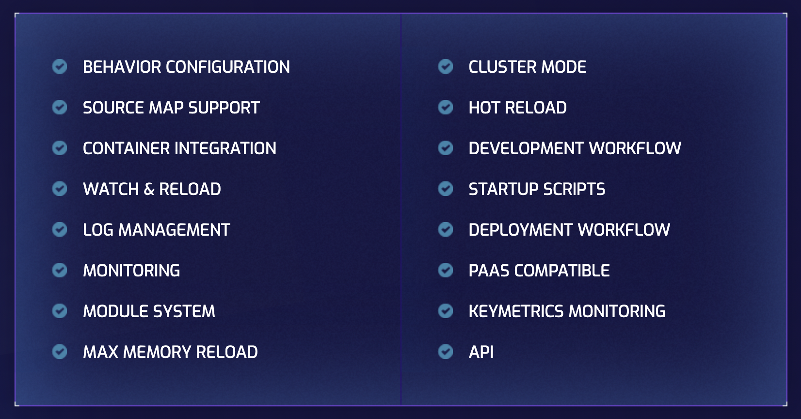
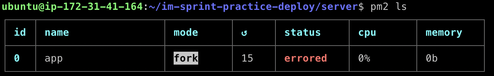
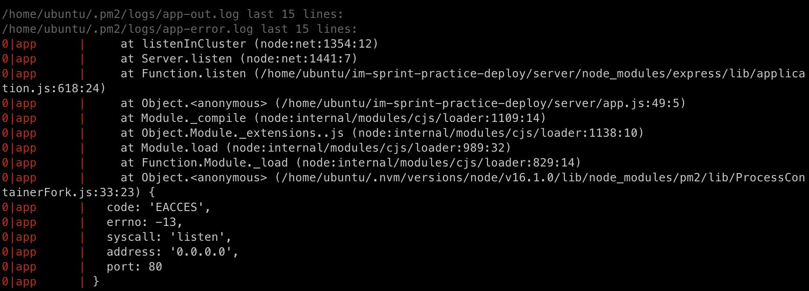

ssh 프로그램을 통해 EC2에 접속하고 터미널을 강제 종료한다고 가정해 본다.
이때 발생하는 일로 로컬에 띄워져 있던 ssh 프로세스가 강제 종료된다.
ssh 프로세스는 강제 종료 시 EC2 상의 프로세스도 같이 종료시킨다.
따라서 EC2 상의 node 프로세스도 종료된다.
즉, 실행되고 있던 서버가 종료된다.
이러한 상황은 서버를 가동하려면 ssh 프로그램을 계속해서 틀어놓아야 서버가 가동된다는 단점이 있다.
linux/unix 계열 운영체제에서는 이러한 문제점을 보완하기 위해 '&'라는 키워드를 명령어 뒤에 붙여 백그라운드 실행으로 만들어줄 수 있다.
예를 들어 node.js 앱을 실행할 경우 마지막에 '&'를 아래와 같이 붙여주면 된다.
node index.js &
명령어 입력시 터미널에 Output으로 등장하는 숫자는 PID로 프로세스 id이다.
PID를 알면 fg 명령어를 통해 실행 중인 프로그램을 포어그라운드로 부를 수도 있고 kill 명령을 통해 백그라운드에서 실행 중인 프로세스를 종료할 수도 있다.
PM2(Process Manage)는 node.js로 실행되는 프로그램(프로세스)을 관리해 주며 백그라운드에서 실행되게 만들 수 있다.
PM2는 단순히 백그라운드 실행뿐만 아니라 아래 사진에서 언급된 것처럼 다양하고 강력한 기능을 제공한다.

이중 Hot Reload와 같이 프로그램이 변경될 때 자동으로 재시작하게 도와준다거나 프로그램 실행 중 에러가 나서 서버가 종료되면 다시 자동으로 실행시켜주는 기능을 제공한다.
또한 서버 운영에서는 필수라고 할 수 있는 로그 관리를 좀 더 전문적으로 할 수 있으며 클러스터 모드와 같이 멀티 코어 CPU를 최대한 활용하는 옵션도 있다.
서버를 접속한 상태에서 아래 명령어를 입력하여 PM2를 전역으로 설치한다.
npm install pm2 -g
PM2를 전역에 설치하고 나면 PM2 명령어를 사용하여 프로세스를 관리할 수 있다.
pm2 start <fileName>
위 명령어로 node.js 앱을 백그라운드로 실행할 수 있다.
PM2로 서버를 실행하면 터미널을 종료하더라도 node.js 애플리케이션이 프로세스로 실행된다.
pm2 stop <fileName>
pm2 restart <fileName>
pm2 delete <fileName>
pm2 ls
pm2 log
일반적인 pm2 start 명령어로 프로세스를 실행할 경우 아래 사진과 같이 errored상태가 되며 서버가 정상적으로 실행되지 않는 것을 확인할 수 있다.

pm2 log 명령어를 통해 어떤 문제가 생겼는지 확인해보면 pm2가 프로세스를 실행시킬 때 관리자 권한으로 실행하지 못해 생긴 문제라고 나온다.

PM2에 관리자 권한을 부여하기 위해서는 authbind라는 패키지를 추가적으로 설치해야 한다.
터미널에서 아래 명령어를 차례대로 입력하여 authbind를 설치한다.
sudo apt-get update
sudo apt-get install authbind
sudo touch /etc/authbind/byport/80
sudo chown ubuntu /etc/authbind/byport/80
sudo chmod 755 /etc/authbind/byport/80
authbind --deep pm2 update
authbind의 설치를 완료한 뒤 pm2 ls 명령어를 통해 어떤 프로그램이 PM2의 프로세스 리스트에 등록되어 있는지 확인한다.
프로세스가 리스트에 있다면 pm2 delete 명령어를 통해 프로세스를 삭제한다.
authbind 설치 전에 실행되고 있던 프로세스에는 관리자 권한을 부여하지 못하기 때문이다.
PM2에 관리자 권한을 부여하기 위해서는 authbind --deep 명령어를 앞에 추가해야 한다.
authbind --deep pm2 start 명령어를 통해 서버를 다시 실행하면 이번에는 문제없이 작동할 것이다.